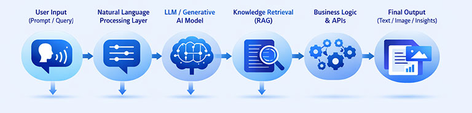
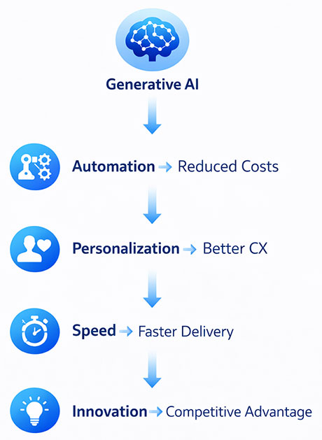

Why Generative AI Matters for Your Business
Imagine being able to scale your marketing output, automate customer support, accelerate software development, and improve decision-making - without proportionally increasing your team size or operational costs. That is exactly what Generative AI is enabling businesses to do in 2026.
Across industries, companies are no longer asking “What is AI?” They are asking:
- Where can AI reduce my costs immediately?
- Where can AI reduce my costs immediately?
- How can I use AI to grow faster than competitors?
- Which processes can be automated without compromising quality?
Generative AI is quickly becoming a competitive necessity rather than a technological option.
At Cybermax Solutions, we work with businesses to turn these questions into real, measurable outcomes through Generative AI Development
Generative AI Statistics & Market Trends
Generative AI is rapidly moving from experimentation to large-scale business adoption. Key industry data highlights its growing impact:
- Over 75% of businesses are actively exploring or implementing generative AI across functions such as marketing, customer support, and operations.
- Organizations adopting generative AI are reporting productivity improvements of 20–40% in tasks like content creation, coding, and data analysis.
- Generative AI can reduce operational costs by up to 30% by automating repetitive and time-intensive processes.
- The global generative AI market is projected to grow at a compound annual growth rate (CAGR) exceeding 30%, making it one of the fastest-growing technology segments.
- Early adopters are already seeing faster time-to-market and improved decision-making, giving them a competitive advantage.
👉 These trends make it clear: generative AI is not just a technological upgrade—it is becoming a core driver of business efficiency and growth.
What is Generative AI? Definition and Business Applications?
Generative AI is a type of artificial intelligence that can create content, automate thinking tasks, and assist decision-making, much like a human—only faster and at scale.
Instead of just analyzing data like traditional systems, generative AI can:
- Write blogs, emails, and reports in seconds
- Generate images, designs, and presentations
- Answer customer queries intelligently
- Assist developers in writing and optimizing code
Think of it as a digital co-pilot for your business operations, working across teams—from marketing to customer support to product development.
How Generative AI Works

Behind the scenes, generative AI combines language understanding, enterprise data, and intelligent automation.
But from a business perspective, the workflow is simple:
- Your team or customer provides an input (a query, request, or task)
- The AI understands the intent and context
- It processes this using trained models and relevant business data
- It delivers a meaningful output—whether that is content, insights, or actions
What matters is not the underlying technology, but the outcome: Faster execution, better decisions, and reduced manual effort
What Generative AI Actually Helps Your Business Achieve

Instead of focusing on features, let’s look at what this means in practical business terms.
It allows you to scale output without scaling teams
Marketing teams can produce significantly more content, support teams can handle more queries, and operations can run more efficiently—without hiring proportionally.
It enables deeper personalization at scale
Customers today expect tailored experiences. Generative AI allows you to personalize communication, recommendations, and engagement across thousands (or millions) of users simultaneously.
It reduces time spent on repetitive work
Tasks such as writing emails, preparing reports, or responding to standard queries can be automated, freeing your team to focus on higher-value work.
It accelerates decision-making
AI can quickly process large volumes of information and generate insights, helping leaders make faster and more informed decisions.
Real Business Use Cases in 2026
Intelligent Marketing and Content Creation
A growing business can use generative AI to automatically create blog posts, social media content, product descriptions, and email campaigns—while maintaining consistent brand messaging.
👉 Business Impact: Reduced marketing costs and significantly faster campaign execution.
AI-Powered Customer Support
Instead of relying entirely on human agents, businesses can deploy AI-driven chatbots that understand customer intent, resolve queries instantly, and operate 24/7. Explore AI Chatbot Development
👉 Business Impact: Faster response times, improved customer satisfaction, and lower support costs.
Faster Software Development
Development teams are increasingly using AI to generate code, debug issues, and accelerate development cycles.
👉 Business Impact: Reduced time-to-market and improved developer productivity.
Internal Knowledge Assistants
Organizations can deploy AI systems that instantly retrieve and summarize information from internal documents, making it easier for employees to access knowledge.
👉 Business Impact: Improved productivity and faster decision-making across teams.
Creative Design and Content Generation
Design teams can use AI to generate visual assets, UI concepts, and marketing creatives quickly, reducing dependency on manual processes.
👉 Business Impact: Faster turnaround and increased creative output.
Industry Applications
| Industry | How Businesses Are Using Generative AI |
|---|---|
| Finance | Automating reports, improving risk analysis, and detecting fraud more effectively |
| Healthcare | Assisting diagnostics and generating detailed medical insights |
| E-commerce | Personalizing shopping experiences and automating product content |
| Manufacturing | Optimizing operations and predicting maintenance needs |
| Education | Delivering personalized learning experiences |
Real-World Impact: Mini Case Study
To understand the real value of generative AI, consider how a mid-sized digital-first business can leverage it across functions:
Scenario: Scaling Marketing and Customer Support with Generative AI
A growing e-commerce company was struggling with:
- High content production costs
- Slow campaign execution
- Increasing customer support volume
Solution Implemented
The company deployed a generative AI system integrated across marketing and support workflows:
- AI-powered content generation for blogs, product descriptions, and email campaigns
- Intelligent chatbot to handle customer queries and order-related support
- Automated response system for FAQs and repetitive inquiries
Business Outcomes
Within a few months, the company achieved:
- 40% reduction in content production time
- 25–30% decrease in customer support workload
- Faster campaign launches (2–3x speed improvement)
- Improved customer response time and satisfaction
Key Takeaway: Generative AI is not just about automation—it enables businesses to scale output, improve efficiency, and enhance customer experience simultaneously.
Key Business Benefits
Significant improvement in operational efficiency
By automating repetitive and time-consuming processes, businesses can operate more efficiently without increasing overhead.
Reduction in overall operational costs
Generative AI reduces dependency on large teams for content, support, and analysis, directly impacting the bottom line.
Better customer experiences through personalization
Customers receive faster, more relevant, and more engaging interactions.
Faster execution across teams
Whether it is launcing campaigns or building products, AI helps reduce delays and improve speed.
Challenges You Should Be Aware Of
While the benefits are substantial, businesses must approach generative AI strategically.
- Data privacy and compliance considerations require proper governance and security frameworks
- Occasional inaccuracies in AI outputs mean validation mechanisms must be in place
- Integration with existing systems can be complex without the right expertise
- Lack of in-house AI capabilities can slow adoption
This is where having the right implementation partner becomes critical.
How Cybermax Solutions Helps You Implement Generative AI
At Cybermax Solutions, we focus on business outcomes first, technology second.
Our approach is designed to deliver measurable impact:
- We identify high-ROI use cases specific to your business, rather than applying generic solutions
- We build custom AI systems tailored to your workflows and data
- We ensure seamless integration with your existing tools and platforms
- We deploy secure, scalable solutions that are ready for real-world usage
Start your AI journey with us by exploring our AI Consulting Services, or take the next step with a trusted AI Development Company to bring your ideas into production.
Future Trends in Generative AI for Businesses
Looking ahead, generative AI will evolve from a tool into a core operational layer of businesses.
You can expect:
- AI systems that can independently execute business workflows
- Deeper integration across departments, from HR to finance
- Multi-modal capabilities combining text, voice, and video
- Stronger regulatory frameworks ensuring responsible AI usage
The shift is already happening: Businesses are moving from experimenting with AI → to running on AI
FAQs
It is a technology that can create content, automate tasks, and assist decision-making using advanced machine learning.
It can be used in marketing, customer support, operations, product development, and analytics.
No. With modern tools and APIs, even mid-sized businesses can adopt it effectively.
The best approach is to identify high-impact use cases and work with an experienced AI partner.